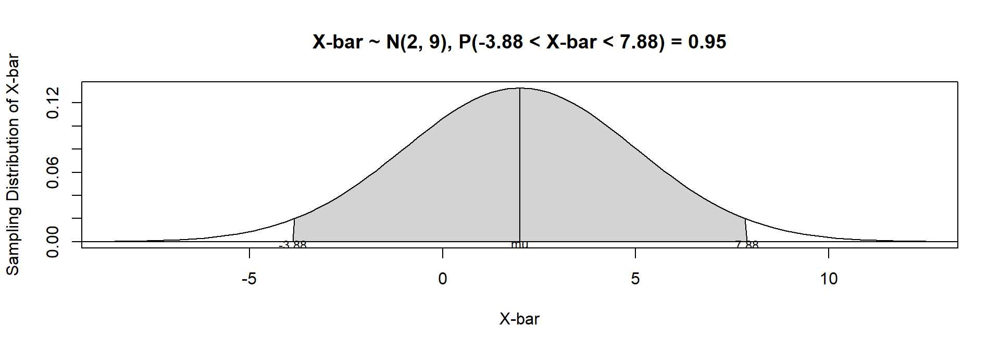
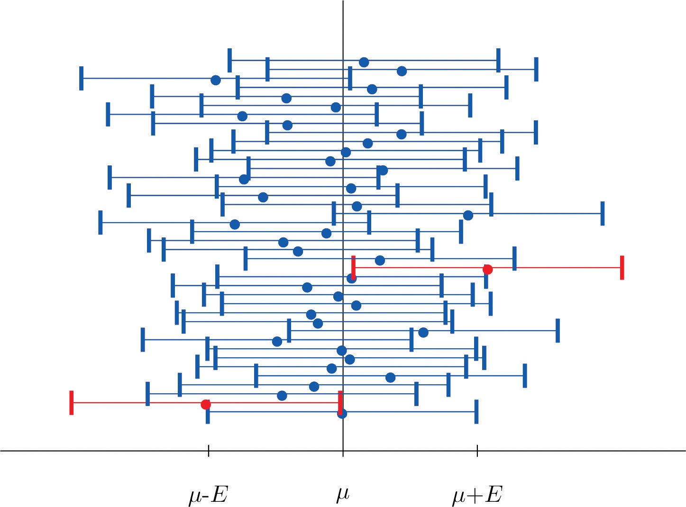
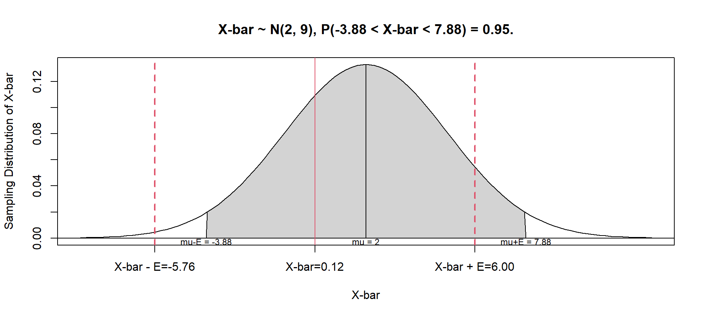
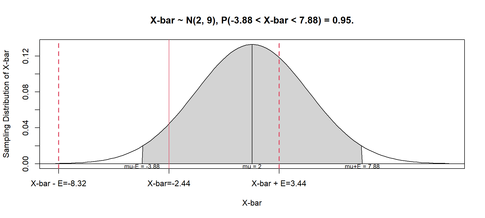
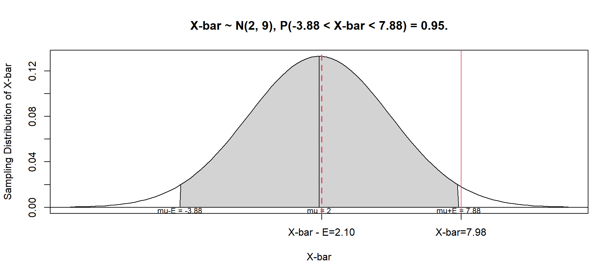

ECON 2B03, Winter 2026
Part C | Lecture 1
Chris Muris, McMaster University
Important thing to keep in mind for today:
Point estimation is the estimation of a population parameter by a single sample statistic
When doing point estimation, the sample statistic is called a point estimate of the population parameter
Point estimates tell us nothing about how reliable or precise the estimate is
Example: Coin flipping
I am trying to determine whether a coin is fair.
Example: Coin flipping (continued)
How informative “50%” is depends on how many trials we did.

Sampling distribution
Sampling distribution of \(\bar X\) when \(\mu_{\bar X}=2\) and \(\sigma^2_{\bar X}=9\).

Rearrange that derivation to obtain the CI: \[\begin{align*} 0.95 &= P(|\bar X-\mu|<1.96\sigma_{\bar X}) \\ &= P(-1.96\sigma_{\bar X} < \bar X-\mu <1.96\sigma_{\bar X}) \\ &= P(\bar X-1.96\sigma_{\bar X} < \mu < \bar X + 1.96\sigma_{\bar X}). \end{align*}\]
So, a \(95\%\) CI for \(\mu\) is given by \[ \left[\bar X-1.96\sigma_{\bar X},\bar X + 1.96\sigma_{\bar X}\right] = \left[\bar X-1.96 \frac{\sigma}{\sqrt{n}},\bar X + 1.96\frac{\sigma}{\sqrt{n}}\right] \]
The key mathematical expression is \[\begin{align*} 0.95 &= P\left(\bar X-1.96\frac{\sigma}{\sqrt{n}} < \mu < \bar X + 1.96\frac{\sigma}{\sqrt{n}} \right) \\ &= P\left(\bar X - E < \mu < \bar X + E \right) \end{align*}\]
Consider the following questions:
CI visualization

CI visualization (sample 2)

CI visualization (sample 3)

We have focused on a level of confidence of 95%, for which \(E = 1.96 \sigma_{\bar X}\)
The researcher chooses the level of confidence:
There is a trade-off between the width of the CI and the level of confidence:
Exercise: Small business employees
A survey of a random sample of \(n=49\) Canadian small businesses revealed that the average number of employees was 15.54. The variance of the number of employees is known from past data to be \(\sigma^2=9\).
Student’s \(t\)-distribution is a distribution of a continuous random variable that resembles the standard normal distribution but has heavier tails
The degrees of freedom is a number that specifies a particular \(t\)-distribution and that is computed based on the sample size
The small sample \(100(1-\alpha)\%\) confidence interval for a population mean for \(\sigma\) known is \(\bar X \pm z_{\alpha/2} \left(\frac{\sigma}{\sqrt{n}}\right)\)
Exercise: Sample size and CI width
A random sample is drawn from a population with known standard deviation \(\sigma = 11.3\). The sample mean is \(\bar X = 105.2\). Not all information given need be used.
Exercise: Interpreting a CI
A large sample yields a 95% confidence interval for the average number of cans of soda consumed per adult per year in the US: \((440, 520)\).
These slides started from J. S. Racine’s slides for ECON2B03 at McMaster University.
Readings are from
References
Shafer, Douglas S. and Zhiyi Zhang (2012), “Introductory Statistics”, available via this link.